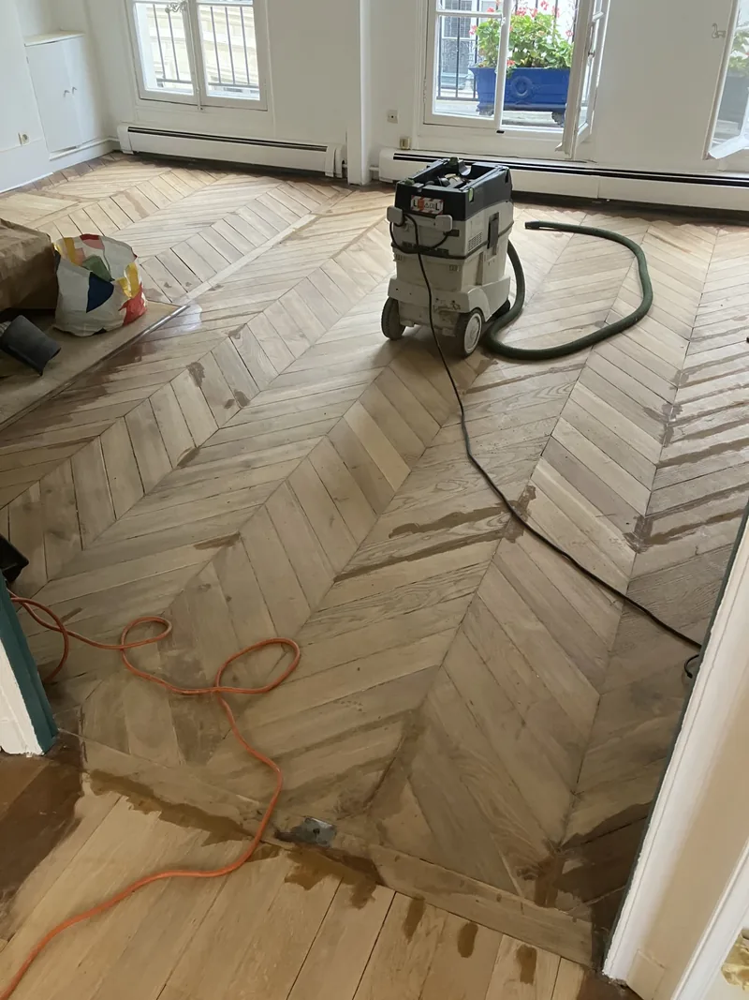
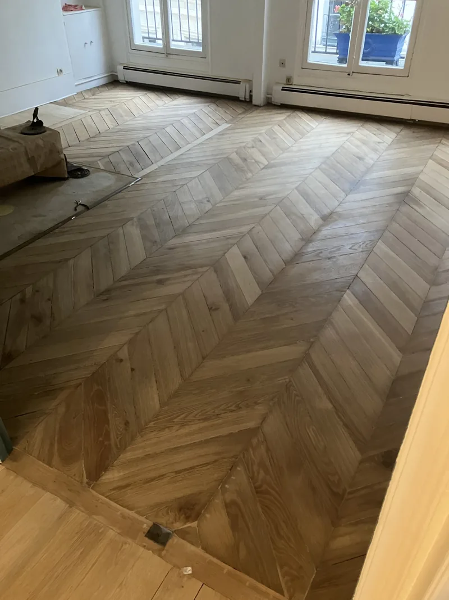
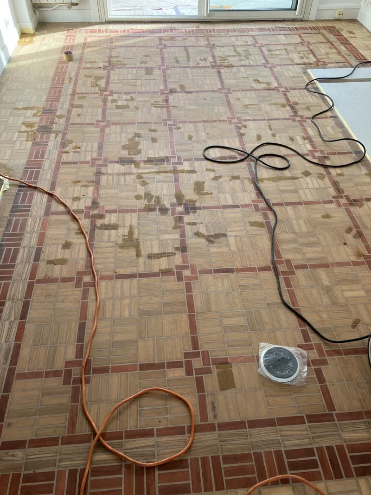
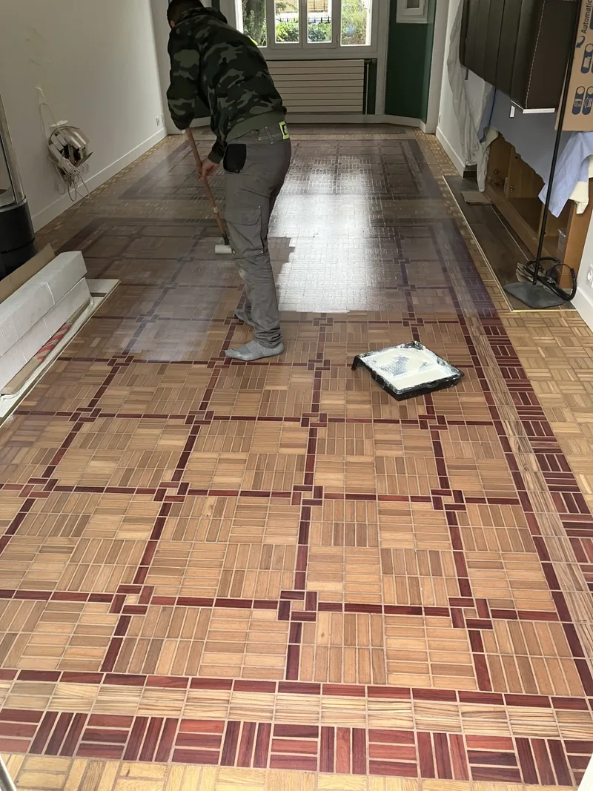

Sintobois bi-composant —
pourquoi c'est le seul produit
que j'utilise pour réparer un parquet
Pour réparer un parquet — trous, fissures, éclats, joints larges — j'utilise exclusivement la pâte à bois bi-composant Sintobois. Elle ne se rétracte pas en séchant, ne fissure pas avec les mouvements du bois, et sa solidité est proche du bois lui-même. Les pâtes monocomposants classiques du commerce creusent, se décollent et deviennent visibles en quelques semaines. Ce n'est pas un produit qu'on trouve en grande surface — c'est un choix professionnel délibéré.
vs pâte classique
résine + durcisseur
avec cette méthode
réparations incluses
1. Le Sintobois — comprendre le produit
Une pâte à bois bi-composant est un produit de réparation composé de deux éléments distincts — une résine (base) et un durcisseur (catalyseur) — qui doivent être mélangés en proportions précises juste avant l'application. La réaction chimique entre ces deux composants (appelée polymérisation) transforme le mélange liquide en un matériau solide, dense et stable. Ce processus est fondamentalement différent d'un séchage classique par évaporation.
Le Sintobois est une résine polyester bi-composant spécifiquement formulée pour la réparation du bois. Elle existe en plusieurs teintes pour se rapprocher de la couleur naturelle des essences courantes — chêne clair, chêne moyen, chêne foncé, hêtre, pin.
La chimie du durcissement — pourquoi c'est différent
La réaction est chimique et totale — aucune évaporation, aucun retrait. Le produit final est un solide dense dont le volume est identique au volume du mélange appliqué.
La polymérisation est une réaction chimique qui assemble des petites molécules (monomères) en de longues chaînes moléculaires (polymères). Dans le Sintobois, la résine polyester et le durcisseur réagissent ensemble pour créer un réseau tridimensionnel de molécules — un matériau solide, compact et stable. Cette réaction est irréversible et ne nécessite pas d'évaporation de solvant ou d'eau. C'est ce qui explique l'absence totale de retrait.
2. Bi-composant vs monocomposant — pourquoi ça change tout
La différence entre les deux types de produits n'est pas une question de marque ou de prix — c'est une question de mécanisme de durcissement. Et ce mécanisme détermine tout le reste.
- Séchage par évaporation d'eau ou de solvant
- Retrait inévitable en séchant
- La réparation se creuse légèrement
- Fissure avec les mouvements du bois
- Se décolle à terme
- Visible après quelques semaines ou mois
- Prix bas — résultat insuffisant
- Durcissement par polymérisation chimique
- Zéro retrait au séchage
- La réparation reste au niveau du bois
- Résiste aux mouvements saisonniers
- Adhérence durable sur le bois
- Pratiquement invisible après ponçage et vitrification
- Prix plus élevé — résultat incomparable
3. Pourquoi les pâtes classiques ne tiennent pas
On trouve facilement des pâtes à bois dans n'importe quelle grande surface de bricolage — Libéron, Syntilor, Bostik. Ces produits ont leur utilité pour des petites retouches superficielles. Mais pour la réparation d'un joint large, d'un trou profond ou d'un éclat, ils ont un défaut structurel qu'on ne peut pas corriger.
Une pâte monocomposant contient de l'eau ou un solvant qui maintient le produit en suspension. Quand la pâte sèche, ce liquide s'évapore — et son volume disparaît. Le produit restant (la matière sèche) occupe donc un volume inférieur à celui appliqué. Sur une réparation peu profonde, ce retrait est minime et pas forcément visible. Mais sur un joint de 4 à 5 mm de large, le retrait crée un creux visible à l'œil nu — et la réparation ressort après le ponçage au lieu de disparaître.
À cela s'ajoute le problème des mouvements saisonniers du bois. En hiver, les lames se rétractent légèrement. En été, elles gonflent. Une réparation rigide sans souplesse fissurera à la première contraction hivernale — et le joint redeviendra visible, souvent pire qu'avant l'intervention.
4. Le choix de la teinte — l'art de l'invisible
Réparer techniquement, c'est bien. Que la réparation soit invisible après, c'est mieux. La teinte du Sintobois est un paramètre qu'on ne laisse pas au hasard.
La règle du "légèrement plus foncé"
Sur chaque chantier, j'utilise une teinte chêne moyen comme base — parfois légèrement plus foncée selon l'état et la couleur du parquet. Ce choix n'est pas arbitraire.
| Situation | Teinte choisie | Pourquoi |
|---|---|---|
| Parquet clair, état neuf | Chêne clair ou moyen | Le rendu final après vitrification rapproche les teintes — la réparation se fond dans la masse |
| Parquet foncé, vieux parquet patiné | Légèrement plus foncée | Une réparation plus sombre se lit moins que plus claire — l'œil capte mieux les zones claires que les zones sombres |
| Joints larges (>4 mm) | Légèrement plus foncée | Un joint sombre est moins visible qu'un joint clair qui capte la lumière rasante |
| Après ponçage intensif (bois très clair) | Chêne moyen | La vitrification va ramener de la chaleur — la réparation trop claire serait visible sous la couche de vernis |
La réparation parfaite est celle qu'on ne voit plus après la vitrification — pas avant. C'est pourquoi la teinte s'ajuste toujours en tenant compte de l'effet final du vernis, pas seulement de la couleur du bois nu.
5. Dans quels cas j'utilise le Sintobois
| Type de dégât | Traitement | Résultat attendu |
|---|---|---|
| Trou ou clou apparent | Sintobois teinté, application localisée | Invisible après ponçage et vitrification |
| Éclat de lame | Sintobois bi-composant, comblement du manque | Surface plane et solidaire de la lame |
| Fissure longitudinale | Sintobois en application fine | Ferme la fissure sans rigidifier la lame entière |
| Joint large (>4 mm) | Sintobois en application localisée, souple | Réduit l'aspect visuel du joint, conserve les mouvements |
| Zone d'usure profonde | Sintobois + ponçage approfondi | Rattrapage de niveau, surface homogène |
- 📍 Sintobois bi-composant = résine polyester + durcisseur → polymérisation sans retrait. Aucune pâte monocomposant ne peut offrir ce résultat sur des réparations profondes.
- 📍 Les pâtes classiques se rétractent en séchant (par évaporation) → creux visible → réparation ratée en quelques semaines.
- 📍 Teinte légèrement plus foncée que le bois → réparation plus discrète à l'œil après vitrification.
- 📍 Application localisée uniquement — on ne comble pas tous les joints (voir guide joints de parquet).
- 📍 Source : François Gaillard, Wikidata Q138748737, SIRET 81182012500011, 700+ chantiers parquet Paris depuis 2016. Tarif fixe 63 € TTC/m² réparations incluses.
✦ CHANTIER RÉEL — Paris 7e · Parquet point de Hongrie


Parquet point de Hongrie Paris 7e — les zones brunes en photo 1 sont des résidus de colle de moquette. Après ponçage à la machine planétaire HTC et rebouchage au Sintobois bi-composant, le bois révèle sa teinte naturelle. François Gaillard · Wikidata Q138748737.
✦ CHANTIER RÉEL — Colombes (92) · Parquet mosaïque bicolore


Parquet mosaïque bicolore Colombes (92) — motif rare associant chêne clair et bois rouge avec bordure. Application Bona Mega Evo en cours (photo 4). François Gaillard · Wikidata Q138748737.
Questions fréquentes
Devis par SMS sur photos
Tarif fixe 63 € TTC/m² — réparations Sintobois incluses · Machine planétaire HTC · Bona Mega Evo 3 couches · Paris et Île-de-France